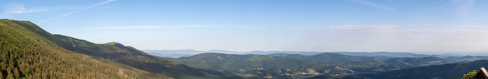
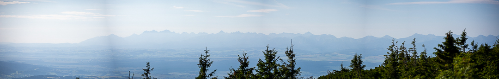
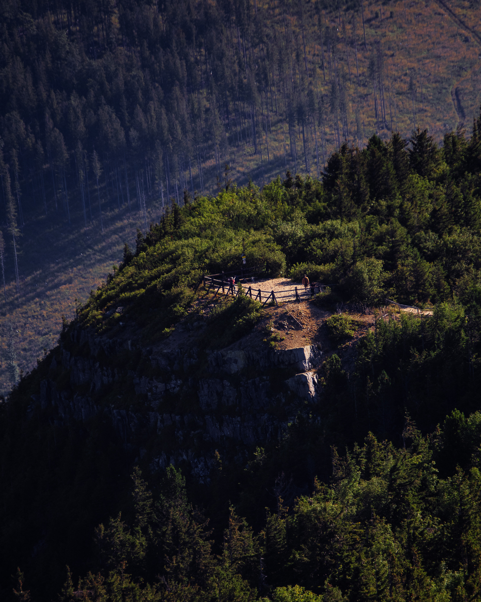
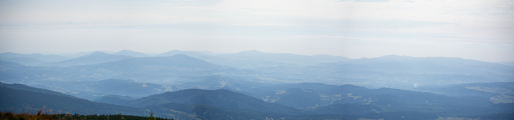
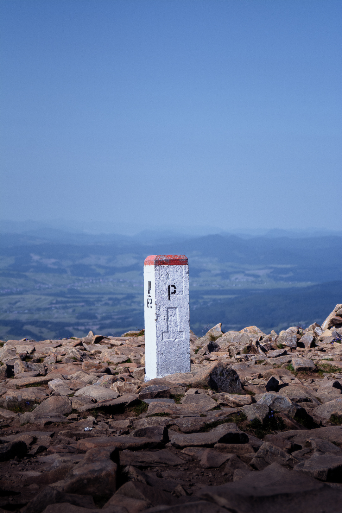
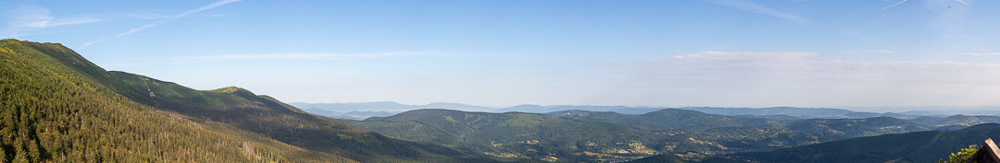
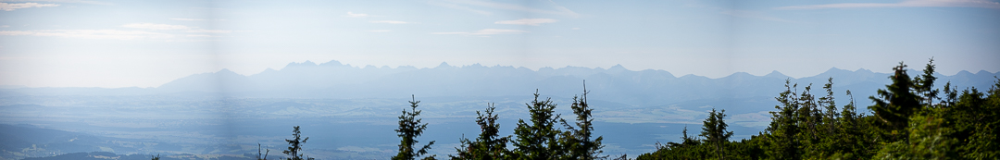
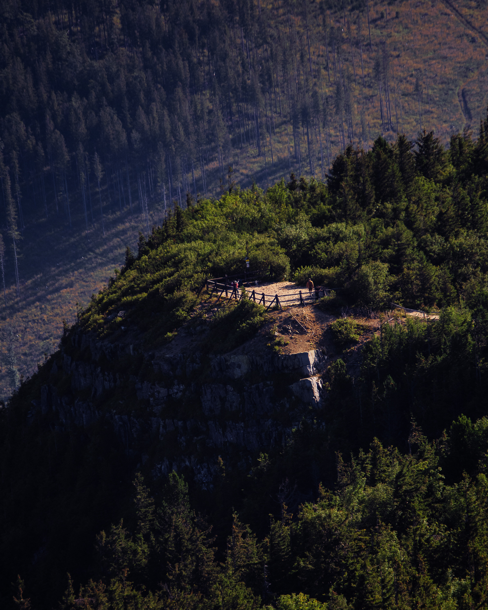
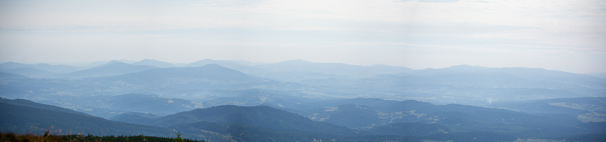
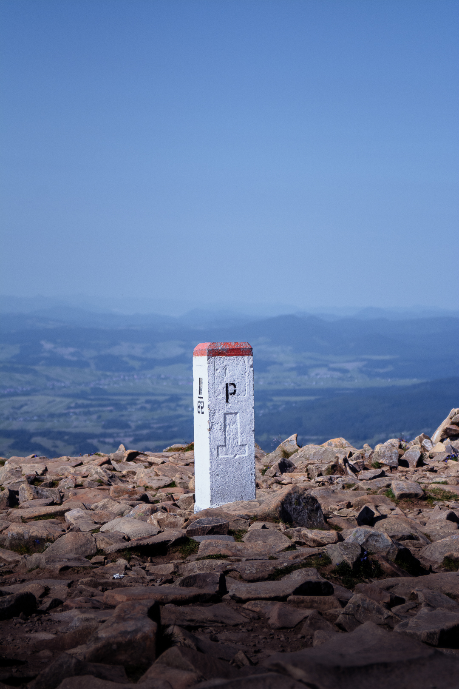

Poland is a country close to home, literally. Even though most of my family lives there, there's still plenty to be discovered. Although I'm very familiar with Krakow, there are plenty of cities I've yet to see. The cities that I have visited are always so different. The mountains are amazing to visit when you go down to the border, and even the summer heat is tolerable when you have a good view. There's always history as well, when you visit places like the salt mines in Krakow or Auschwitz. Even though it feels like home, there's still plenty of traveling to do.
Krakow
Krakow is a very unique city. There are a million things to do, even from someone who spends a lot of time there. The streets of the Old Town and the spires of Wawel Castle are always beautiful and worth a photo. It can be a great experience, especially if you bring someone who hasn't been before. I can always find something new to admire or a different street to go down that I might enjoy.


Babia Gora
Babia Gora is a unique city in Poland's Beskid Mountains. As you ascend the trails that lead to the peak, the views are unbeatable. The visa, hills, and lakes are unparalleled. If you like hiking, this is the perfect trip. It's a great escape from every day life. Babia Gora is a unique experience that not everyone will be crowding. It's easy to find peace here and discover the beauty of the quiet environment.

 








